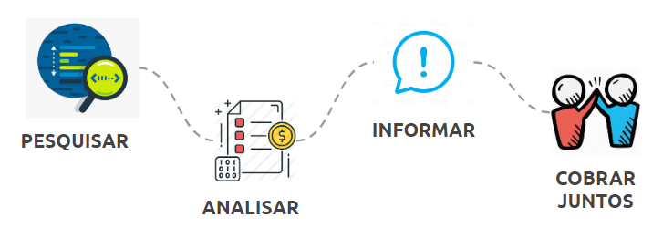

Monitorando as Compras Públicas da Covid-19
Guia de Fiscalização Cidadã

POR QUE FISCALIZAR
A pandemia decorrente do novo coronavírus (Covid-19) obrigou vários países, inclusive o Brasil, a adotarem medidas necessárias ao enfrentamento da crise sanitária instalada. Uma dessas medidas é o chamado reconhecimento de estado de calamidade pública (SANFONA 1).
Ao declarar essa situação, por meio de Decreto estadual ou municipal, os governos locais não precisam seguir todas as regras de tempos normais para fazer compras públicas e usar seu orçamento. Essa flexibilização dá mais agilidade para enfrentar um momento de emergência, mas também pode aumentar os riscos de mau uso dos recursos. Daí a necessidade de ficar de olho ainda mais aberto!
A licitação é o procedimento legal padrão para garantir que o governo compre bens e contrate serviços com o preço mais vantajoso para os cofres públicos, sem beneficiar nenhuma empresa ou pessoa específica. Com o estado de calamidade, ela foi dispensada para a aquisição de bens, serviços, inclusive de engenharia, e insumos destinados ao enfrentamento da emergência de saúde pública decorrente do coronavírus. Guarde bem essa informação: o objetivo da compra deve ser relacionado ao combate à pandemia!
A dispensa de licitação é temporária, ou seja, vale apenas enquanto perdurar a emergência de saúde pública. E para acontecer, a compra ou contratação deve atender - e justificar! - as seguintes condições:
AS DISPENSAS DE LICITAÇÃO NA SUA CIDADE TEM TODAS ESSAS CARACTERÍSTICAS?
- ocorrência de situação de emergência
- necessidade de pronto atendimento da situação de emergência
- existência de risco a segurança de pessoas, obras, prestação de serviços, equipamentos e outros bens, públicos ou particulares; e
- limitação da contratação à parcela necessária ao atendimento da situação de emergência.
Se, por um lado, esta situação inédita confere aos governos maior liberdade para o manejo da crise, por outro diminui a segurança do processo administrativo. Por isso, a transparência e o controle social se tornam ainda mais urgentes, a fim de se evitar o uso indevido dos recursos em benefício de interesses pessoais!
Transparência e controle social também são vacinas
Está na nossa Constituição Federal: o controle social e a transparência pública são direitos que garantem o exercício pleno da cidadania e o fortalecimento democrático.
Fazer controle social é acompanhar as atividades governamentais, principalmente as políticas públicas e os gastos. Esse controle ajuda a melhorar as políticas públicas e a tornar as ações do Estado mais eficientes, eficazes e efetivas.. É também uma excelente vacina contra a corrupção, pois contribui para prevenir irregularidades, , fortalece as instituições e confere legitimidade às escolhas políticas.
Aliados de primeira hora do controle social, a transparência e o acesso à informação pública permitem conhecer os dados e informações que norteiam as atividades governamentais: fatores que levaram à tomada de decisão, o destino dos gastos públicos, os contratos firmados, os salários pagos, os responsáveis por determinada ação, entre outras.
Os processos de compras públicas estão sujeitos a falhas, irregularidades e desvios de conduta em todas as suas fases. Para reduzir esses riscos, o próprio governo já possui mecanismos de controle interno, que podem prevenir ou repreender atos de corrupção, por exemplo por meio das auditorias e corregedorias.
Mas, muitas vezes, esses mecanismos são insuficientes ou mesmo inexistentes. É aí que entra a importância do controle social. A sociedade pode ajudar a monitorar esses processos, documentando possíveis irregularidades e encaminhando a autoridades para investigação como, por exemplo, o Tribunal de Contas do Estado.
Em um momento de pandemia, precisamos de mais olhos em cima das atividades governamentais — as falhas ou desvios podem custar vidas! Por isso, reunimos na próxima seção alguns dos problemas mais frequentes em processos de compra pública, para que você possa “farejar” as irregularidades ao analisar as informações.